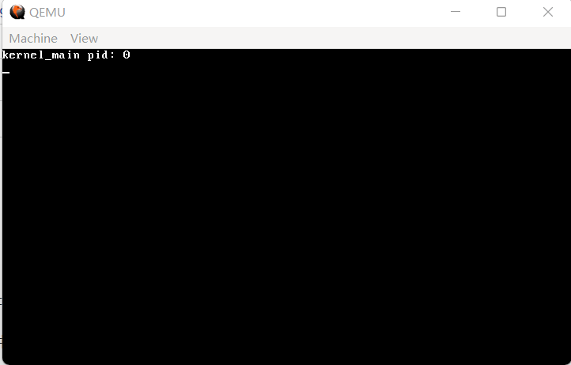
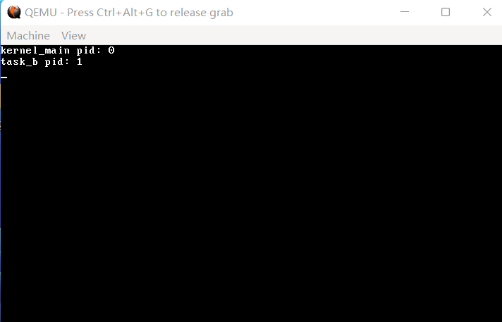

15 系统调用——应用程序与系统的交互之门
如果你没用过 Linux，只做过 Windows 开发，那么没听说过系统调用（或者其简称syscall）是比较正常的，但没听说过API是不太合理的。在本篇文章中，你可以暂时认为这两者是一样的。
如果你做过 32 位的 Linux 开发，那就比较好说了，如果没有做过也无所谓。
首先，我们得想一想：程序是如何调用系统的功能的呢？在 C 语言中，或许只是一个函数调用，那么在底层，它长什么样呢？
在 32 位的 Linux 中，它的底层是这样的：往 eax、ebx 这些寄存器里填好参数，然后执行 int 80h。这看起来很好用，我们也来抄一下。
首先，我们来在 IDT 里创建一个 0x80 编号的中断描述符。
代码 15-1 0x80 号中断描述符（kernel/gdtidt.c）
idt_set_gate(47, (uint32_t) irq15, 0x08, 0x8E);
idt_set_gate(0x80, (uint32_t) syscall_handler, 0x08, 0x8E | 0x60); // 这里是新增的
idt_flush((uint32_t) &idt_ptr);
代码 15-2 开头声明（kernel/gdtidt.c）
extern void gdt_flush(uint32_t);
extern void idt_flush(uint32_t);
extern void syscall_handler(); // 这里是新增的
和上面设置第 15 号中断的代码相对比，我们发现在最后一个参数处有些奇怪，为什么要 | 0x60 呢？事实上，| 0x60 的意思就是说，这个中断是给应用程序用的。可是我们目前还没有应用程序，因此只能让操作系统代为测试了。
接下来我们来编写 syscall_handler：
代码 15-3 系统调用入口（kernel/interrupt.asm）
[extern syscall_manager]
[global syscall_handler]
syscall_handler:
sti ; CPU 在执行 int 指令时默认关闭中断，我们只是来用一下系统功能，所以把中断打开
pushad ; 用于返回值的 pushad
pushad ; 用于给 syscall_manager 传值的 pushad
call syscall_manager
add esp, 32 ; 把给syscall_manager 传值的 pushad 部分跳过
popad ; 把希望系统调用后的寄存器情况 pop 出来
iretd ; 由于是 int 指令，所以用 iretd 返回
接着，在 kernel 目录下创建 syscall.c，我们来实现 syscall_manager：
代码 15-4 系统调用分发（kernel/syscall.c）
#include "common.h"
#include "syscall.h"
void syscall_manager(int edi, int esi, int ebp, int esp, int ebx, int edx, int ecx, int eax) // 这里的参数顺序是pushad的倒序，不可更改
{
typedef int (*syscall_t)(int, int, int, int, int); // 这里面只有五个寄存器勉强可以算正常用，所以只有五个参数
//(&eax + 1)[7] = ((syscall_t) syscall_table[eax])(ebx, ecx, edx, edi, esi); // 把下面的代码压缩成上面一行是这样的
syscall_t syscall_fn = (syscall_t) syscall_table[eax]; // 从syscall_table中拿到第 eax 个函数
int ret = syscall_fn(ebx, ecx, edx, edi, esi); // 调用并获取返回值
// 感谢编译器，即使给多了参数，被调用的函数也会把它们忽略掉
int *save_reg = &eax + 1; // 进入用于返回值的pushad
save_reg[7] = ret; // 第7个寄存器为eax，函数返回时默认将eax作为返回值
}
这里的 syscall_table 定义在 syscall.h 中，它长这样：
代码 15-5 系统调用函数表（include/syscall.h）
#ifndef _SYSCALL_H_
#define _SYSCALL_H_
typedef void *syscall_func_t;
syscall_func_t syscall_table[] = {
};
#endif
里面目前还没有任何一个函数。我们之所以采用这样一个系统调用表的方式，是因为这样便于扩展，我们只需要写好函数，然后加到数组里即可。
那么，我们现在来试试这个新框架。在 syscall.c 的下方，我们创建一个 sys_getpid：
代码 15-6 系统调用 sys_getpid（kernel/syscall.c）
int sys_getpid()
{
return task_pid(task_now());
}
添加到 syscall_table：
代码 15-7 新系统调用表（include/syscall.h）
int sys_getpid();
syscall_func_t syscall_table[] = {
sys_getpid,
};
新建 kernel/syscall_impl.asm，给 getpid 加个包装：
代码 15-8 系统调用的包装（kernel/syscall_impl.asm）
[global getpid]
getpid:
mov eax, 0
int 80h
ret
在 Makefile 中，给 OBJS 变量加上 out/syscall.o out/syscall_impl.o，理论上现在已经可以调用 getpid 了。
我们来做一个小小的测试。在 kernel_main 中加入这三行（放在 task_init 调用的后面）：
代码 15-9 getpid 测试（kernel/main.c）
monitor_write("kernel_main pid: ");
monitor_write_dec(getpid());
monitor_put('\n');
编译，运行，效果如下：

（图 15-1 成功了吗？）
getpid 返回了0。这有可能有两个原因，是 int 80h 的调用失败了，所以 getpid 返回的是调用时的那个0，还是真的返回了 kernel_main 对应的那个任务的 pid 也就是 0 呢？
再创建一个任务，我们来实地验证一下：
代码 15-10 task_b 打赢复活赛（kernel/main.c）
void task_b_main()
{
monitor_write("task_b pid: ");
monitor_write_dec(getpid());
monitor_put('\n');
task_exit(0);
}
// 以下两行语句添加在kernel_main中task_init调用后
task_t *task_b = create_kernel_task(task_b_main);
task_run(task_b);
再次编译运行，效果如下：

（图 15-2 赢）
至此，我们已经初步完成了系统调用的框架。后续如果有需要，我们再对大框架进行修改。以后只要添加一个系统调用 xxx，对应的处理函数就叫 sys_xxx，这是我们后面的一个约定。
现在的篇幅略微有些短了（bushi），我们来实现一个 printf 吧。毕竟从内存管理开始，我们就在忍受着交替的 monitor_write、monitor_write_hex、monitor_write_dec，如果到了下一节的 shell 我们还在用这些，那这个画面……
所以，实现一个 printf 势在必行。之所以拖到现在，是因为前面的篇幅都被排满了。
那么，我们开始。printf 分为两个部分：print 和 f。看起来 print 简单一点，我们就先做 print 吧。
在 Linux 中，输出用的函数归根到底是 write 系统调用。我们照葫芦画瓢，也实现一个 write 系统调用。不过在 Linux 上，write 是用来写文件的，第一个参数代表对应的文件描述符（第18节会详细讲解这是个什么东西）。只要传入 1，那么 Linux 就会认为你在往标准输出写入。这个功能好，我也这么干。
那么，sys_write 的具体内容如下：
代码 15-11 只支持到标准输出的 write（kernel/syscall.c）
int sys_write(int fd, const void *msg, int len)
{
if (fd == 1) {
char *s = (char *) msg;
for (int i = 0; i < len; i++) monitor_put(s[i]);
return 0;
}
return -1;
}
代码 15-12 现在的 include/syscall.h
#ifndef _SYSCALL_H_
#define _SYSCALL_H_
typedef void *syscall_func_t;
int sys_getpid();
int sys_write(int, const void *, int);
syscall_func_t syscall_table[] = {
sys_getpid, sys_write,
};
#endif
接下来添加对应的包装：
代码 15-13 write 的包装（kernel/syscall_impl.asm）
[global write]
write:
push ebx
mov eax, 1
mov ebx, [esp + 8]
mov ecx, [esp + 12]
mov edx, [esp + 16]
int 80h
pop ebx
ret
按照 C 编译器约定，ebx 不能随便用，所以这里 push 又 pop 了一下。那么，参数的位置也就要相应顺延，从 esp + 4、esp + 8、esp + 12 都加了4。
好了，我们来测试一下 write：
代码 15-14 write 测试（kernel/main.c）
void task_b_main()
{
write(1, "task_b pid: ", strlen("task_b pid: "));
monitor_write_dec(getpid());
write(1, "\n", 2);
task_exit(0);
}
编译，运行，效果仍应如图 15-2 所示。现在，我们已经有了 print 的系统调用，该实现 f 了。
或许有人会说，你这个 write 比 monitor_write 需要的参数还要多，有什么好处可言吗？你说得对，但是 write 是系统调用，未来可以给应用程序用，但是 monitor_write 并不行。
怎样实现这个 f 呢？这个 f 背后的内容非常庞大，我们不写那么多，只支持 %d、%x、%c 以及 %s。如果只支持打印的话，功能有点少，顺便再支持一个 sprintf。涉及到 sprintf，那就必然存在要把整数转换成字符串的问题。
输出十进制和十六进制整数我们已有先例，但是那都是输出到屏幕上了，我们总不可能从屏幕里再收集一遍。所以我们只好写一个单独的函数了。
查找资料发现，在 Windows 下，对应的整数转字符串函数为 itoa，原型是 char *itoa(int num, char *ptr, int radix)。我们不需要这样一个返回值，但我们又需要写入 char *。这是因为 char * 本身是一个字符串，在别的作用域修改 char * 就需要 char * 的指针，也就是 char **。
最终，我们决定把 itoa 写成：void itoa(uint32_t num, char **ptr_addr, int radix)。它的实现也没有那么难：
代码 15-15 itoa（lib/printf.c）
#include "common.h"
static void itoa(uint32_t num, char **buf_ptr_addr, int radix)
{
uint32_t m = num % radix; // 最低位
uint32_t i = num / radix; // 最高位
if (i) itoa(i, buf_ptr_addr, radix); // 先把高位化为字符串
if (m < 10) { // 处理最低位
*((*buf_ptr_addr)++) = m + '0'; // 0~9，直接加0
} else {
*((*buf_ptr_addr)++) = m - 10 + 'A'; // 10~15，10~15->0~5->A~F
}
}
接下来我们来思考一个问题：printf 接收的参数并没有数量上的限定，它哪来的那么大能耐接收无穷无尽的参数呢？这就用到了 C 语言一个不那么鲜为人知的特性：可变参数包。
访问 Linux 的 manpage 的网页版：man7中有关 printf 的文档，我们发现，printf 的参数里冒出了一个 ...，这又是什么东西呢？这就是可变参数包的语法，你可以往 ... 里塞任意多个任意类型的东西，只要内存装得下就行。
那么，我们怎么从这坨 ... 中拿到我传入的东西呢？我们发现，除了 printf、fprintf、dprintf、sprintf 和 snprintf 这五个带 ... 的函数以外，下面还有五个类似的函数，只是在这五个函数的前面加了一个字母 v。对比一下参数，原来是把最后一个 ... 换成了 va_list ap。下面的文档也明确声明，带 v 的版本与不带 v 的版本功能相同，只是一个用了 va_list 一个没用。看来这个 va_list 最终就是可变参数包的载体。
下面还有一个链接让我们转到 stdarg(3)，这四个函数应该就是对 va_list 进行操纵的函数了。va_start 是必须要调用的，last 依照描述，是 va_list 之前的最后一个参数。需要取参数，则要调用 va_arg，如果想要 int 参数，就需要调用 va_arg(ap, int)，如果要 char，就是 va_arg(ap, char)，以此类推。用完 va_list 之后，我们需要调用 va_end。最下面的 va_copy 我们用不到，就不用管了。
那么这四个东西是怎么实现的呢？我们找到了 mingw 中对应的头文件，位于 mingw文件夹下/lib/gcc/mingw32/9.2.0/include/stdarg.h（不同版本mingw可能变化），特此复制粘贴供诸位参考。请看 VCR：
代码 15-16 va_list 有关函数的实现（无文件）
#define va_start(v,l) __builtin_va_start(v,l)
#define va_end(v) __builtin_va_end(v)
#define va_arg(v,l) __builtin_va_arg(v,l)
#if !defined(__STRICT_ANSI__) || __STDC_VERSION__ + 0 >= 199900L \
|| __cplusplus + 0 >= 201103L
#define va_copy(d,s) __builtin_va_copy(d,s) // C99以上 或 C++11以上 或添加-ansi选项时 提供
#endif
#define __va_copy(d,s) __builtin_va_copy(d,s)
原来是编译器内置的实现，那没事了。在 i686-elf-tools 的类似路径下，我们也找到了这样的一段代码，看来我们的 gcc 也是支持这几个东西的。
有编译器内置实现我们就不管了，新建 include/stdarg.h，我们这就开抄：
代码 15-17 include/stdarg.h
#ifndef _STDARG_H_
#define _STDARG_H_
typedef char *va_list; // 我也不知道va_list是什么类型，先给个char *挂着，反正用不到
#define va_start(v,l) __builtin_va_start(v,l)
#define va_end(v) __builtin_va_end(v)
#define va_arg(v,l) __builtin_va_arg(v,l)
#define va_copy(d,s) __builtin_va_copy(d,s)
#endif
好了，现在我们已经有了处理可变参数包的手段了，我们来写一个 printf：
代码 15-18 不能格式化的 printf（lib/printf.c）
#include "stdarg.h" // 在开头添加，因为用到了va_list以及操纵va_list的这些东西
int vsprintf(char *buf, const char *fmt, va_list ap)
{
return 114514;
}
int sprintf(char *buf, const char *fmt, ...)
{
va_list ap;
va_start(ap, fmt);
int ret = vsprintf(buf, fmt, ap);
va_end(ap);
return ret;
}
int vprintf(const char *fmt, va_list ap)
{
char buf[1024] = {0}; // 理论上够了
int ret = vsprintf(buf, fmt, ap);
write(1, buf, ret);
return ret;
}
int printf(const char *fmt, ...)
{
va_list ap;
va_start(ap, fmt);
int ret = vprintf(fmt, ap);
va_end(ap);
return ret;
}
经过层层踢皮球，最终 sprintf、vprintf 和 printf 参数处理的重任都落到了 vsprintf 的头上。由于我们只支持 %s、%c、%d 和 %x，我们也就不用多麻烦地处理 % 后面那一坨，直接用一个 switch 即可。
我们先来列一下基本框架：
代码 15-19 vsprintf 的基本框架（lib/printf.c）
int vsprintf(char *buf, const char *fmt, va_list ap)
{
char *buf_ptr = buf; // 不动原来的buf，原来的buf可能还用得着
const char *index_ptr = fmt; // 不动原来的fmt，但这个好像真用不着
char index_char = *index_ptr; // fmt串中的当前字符
int32_t arg_int; // 可能会出现的int参数
char *arg_str; // 可能会出现的char *参数
while (index_char) { // 没到fmt的结尾
if (index_char != '%') { // 不是%
*(buf_ptr++) = index_char; // 直接复制到buf
index_char = *(++index_ptr); // 自动更新到下一个字符
continue; // 跳过后续对于%的判断
}
index_char = *(++index_ptr); // 先把%跳过去
switch (index_char) { // 对现在的index_char进行判断
case 's':
case 'c':
case 'x':
case 'd':
default:
break;
}
index_char = *(++index_ptr); // 再把%后面的s c x d跳过去
}
return strlen(buf); // 返回做完后buf的长度
}
基本上就是这样，对代码的解释都在注释里了。
下面我们着重对 index_char 的判断进行讲解，实际上也并不多。
首先从 %s 和 %c 开始。大致思路是这样的：获取对应的参数->写入 buf_ptr。
代码 15-20 %s、%c（lib/printf.c）
switch (index_char) { // 对现在的index_char进行判断
case 's':
arg_str = va_arg(ap, char*); // 获取char *参数
strcpy(buf_ptr, arg_str); // 直接strcpy进buf_ptr
buf_ptr += strlen(arg_str); // buf_ptr直接跳到arg_str结尾，正好在arg_str结尾的\0处
break;
case 'c':
*(buf_ptr++) = va_arg(ap, int); // 把获取到的char参数直接写进buf_ptr
break;
case 'x':
case 'd':
default:
break;
}
之所以 %c 那里没有用 va_arg(ap, char) 获取 char 类型的参数，是因为这样会报警告，原因未知。
下面的 %x 和 %d 逻辑类似，因为有 itoa 十分简单。
代码 15-21 %x、%d（lib/printf.c）
case 'x':
arg_int = va_arg(ap, int); // 获取int参数
itoa(arg_int, &buf_ptr, 16); // itoa早在设计时就可以修改buf_ptr，这样就直接写到buf_ptr里了，还自动跳到数末尾
break;
case 'd':
arg_int = va_arg(ap, int); // 获取int参数
if (arg_int < 0) { // 给负数前面加个符号
arg_int = -arg_int; // 先转负为正
*(buf_ptr++) = '-'; // 然后加负号
}
itoa(arg_int, &buf_ptr, 10); // itoa早在设计时就可以修改buf_ptr，这样就直接写到buf_ptr里了，还自动跳到数末尾
break;
现在我们的 printf 就已经写完了，在 Makefile 的 OBJS 最后加入一个 out/printf.o，准备进行测试。
代码 15-22 现在的 task_b_main（kernel/main.c）
void task_b_main()
{
printf("task_b %s %d%c", "pid:", getpid(), '\n');
task_exit(0);
}
编译，运行，效果仍应如图 15-2 所示。至此，我们的 printf 顺利完成。
最后，我们再开发一个内核专用的 printk，它直接调用 monitor_write，省略了 write 的中间步骤。
代码 15-23 printk（lib/kstdio.c）
#include "stdio.h"
#include "monitor.h"
int printk(const char *fmt, ...)
{
va_list ap;
va_start(ap, fmt);
char buf[1024] = {0};
int ret = vsprintf(buf, fmt, ap);
va_end(ap);
monitor_write(buf);
return ret;
}
代码 15-24 include/stdio.h
#ifndef _STDIO_H_
#define _STDIO_H_
#include "common.h"
#include "stdarg.h"
int vsprintf(char *buf, const char *fmt, va_list ap);
int sprintf(char *buf, const char *fmt, ...);
int vprintf(const char *fmt, va_list ap);
int printf(const char *fmt, ...);
int printk(const char *fmt, ...); // for kernel use
#endif
在 Makefile 的 OBJS 处添加 out/kstdio.o，由于测试代码未变更，暂时不需要编译运行。
好了，本节到此为止就结束了，下一节我们开始做更好的人机交互——也就是 shell。